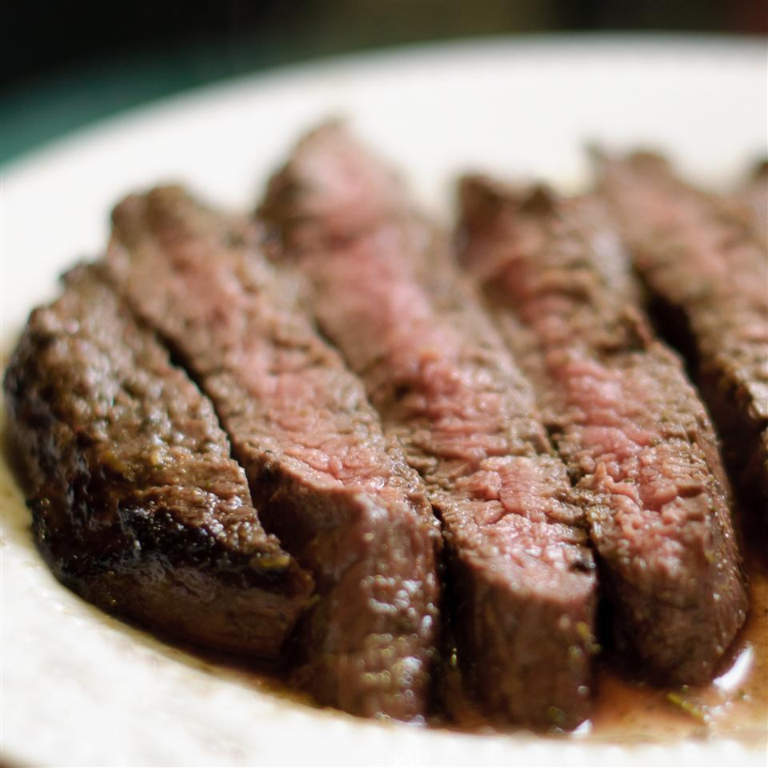

Tuscan Flank Steak

Description
A grilled steak coming off a charcoal fire, which was then sliced and splashed with olive oil, lemon, and rosemary. While I'm sure my version is far from traditional, it's really tasty and the very user-friendly flank steak is the perfect cut.
Ingredients
- ½ cup chopped fresh rosemary
- 6 cloves garlic
- ⅓ cup olive oil
- ¼ cup lemon juice
- 1 teaspoon coarsely ground black pepper
- ½ teaspoon red pepper flakes
- ½ teaspoon salt
- 1 (1 1/2-pound) flank steak, trimmed of excess fat
- ⅓ cup extra virgin olive oil
- 3 tablespoons lemon juice
- 2 teaspoons lemon zest
- 1 teaspoon minced fresh rosemary
- ⅛ teaspoon red pepper flakes
- 1 pinch salt
- 1 sprig fresh rosemary
Steps
- Combine 1/2 cup chopped fresh rosemary, garlic, 1/3 cup olive oil, 1/4 cup lemon juice, black pepper, 1/2 teaspoon red pepper flakes, and 1/2 teaspoon salt in a blender or food processor. Blend until smooth and set marinade aside.
- Pierce the steak with a fork 20 to 30 times. Place in a shallow baking dish. Pour marinade over steak and flip to coat both sides. Cover and refrigerate for 4 to 8 hours.
- Combine 1/3 cup olive oil, 3 tablespoons lemon juice, lemon zest, 1 teaspoon minced rosemary, 1/8 teaspoon red pepper flakes, and a pinch of salt in a jar. Cover and shake the dressing to combine. Shake again before using.
- Preheat an outdoor grill for medium-high heat and lightly oil the grate.
- Remove steak from marinade; scrape off any chunks of marinade. Discard used marinade. Season steak with salt and black pepper.
- Place steak on the preheated grill and cook until browned on the outside and red on the inside, about 6 to 8 minutes per side. Place 2 tablespoons of the olive oil-lemon juice dressing in a small bowl.
Use rosemary sprig to baste the steak while it cooks. An instant-read thermometer inserted into the center of a steak should read 125 degrees F (52 degrees C) for rare.
- Remove steak to a platter and allow to rest about 6 minutes before slicing. Cut in half lengthwise, then into 1/4-inch-thick slices at an angle against the grain. Drizzle with additional dressing.